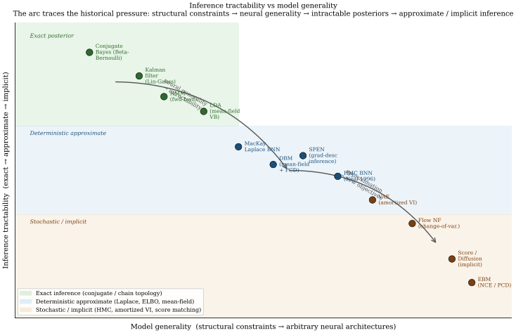

Thesis. Probabilistic inference cannot be separated from the learning algorithm and its scalability constraints. Classical graphical models (HMMs, Kalman filters, LDA) solve inference exactly, but only for special structures. When neural networks are used as model components, structural constraints dissolve and inference becomes intractable. That intractability is not a side-effect to be engineered away: it is the organizing pressure that forces variational objectives (the ELBO), approximate inference families (amortized encoders, score matching), and ultimately changes what "inference" even means. The field did not merely apply neural nets to probabilistic models; intractability reshaped the objectives and the notion of inference itself.
The four families below follow the arc that pressure created: exact-but-structured (classical graphical models); general-but-intractable (neural model components); approximation-as-necessity (ELBO, variational families, score matching); and new objectives and meanings (amortized inference, implicit models, denoising).
Exact Inference under Structural Constraints
The Bayesian formalism was systematized for data analysis by (Gelman et al. 2013 Ch 1-2), building on a philosophical foundation laid out by (Jaynes 2003) that frames probability as extended logic rather than as long-run frequency. The contemporary pedagogical synthesis is (Murphy 2022 Ch 4-5), which unifies frequentist maximum-likelihood, MAP estimation, and fully Bayesian inference within a single probabilistic-graphical-model vocabulary. Earlier textbook treatments include (Bishop 2006) and (MacKay 2003); the latter is notable for weaving Bayesian inference, information theory, and coding theory into a single narrative.
Structured probabilistic modeling was codified in (Koller and Friedman 2009), which remains the canonical reference for directed and undirected graphical models, exact inference (variable elimination, junction trees), approximate inference (loopy belief propagation, MCMC), and learning. The dominant classical latent-variable models preceding deep learning are hidden Markov models, systematized for speech recognition by (Rabiner 1989); linear-Gaussian state-space models, introduced by (Kalman 1960) for linear filtering and control; and latent Dirichlet allocation, developed for document topic modeling by (Blei et al. 2003). Discriminative structured prediction is represented by conditional random fields (Lafferty et al. 2001), which sidestep the locally-normalized exposure-bias issue of maximum-entropy Markov models.
What these models share is a structural assumption that makes the posterior integral tractable: the chain topology for HMMs and Kalman filters (enabling forward-backward and Kalman recursion), and Dirichlet-Multinomial conjugacy for LDA (enabling closed-form coordinate-ascent VI). The inference algorithm and the model structure are inseparable. This inseparability is the constraint that the neural-network era dissolves, and that dissolution is what forces the rest of the arc.
Neural Generality and the Emergence of Intractability
The bridge from classical Bayesian statistics to neural networks was built in the early 1990s. (MacKay 1992) introduced the Laplace-approximation evidence framework, showing that weight-decay regularization has a principled Bayesian interpretation and that hyperparameters such as decay constants can themselves be optimized by maximizing the marginal likelihood. (Neal 1996) extended this to full-posterior inference via Hamiltonian Monte Carlo and, in the same monograph, proved that a one-hidden-layer network with Gaussian weights converges to a Gaussian process in the infinite-width limit. This result anchors the modern NNGP/NTK literature and is revisited in the Bayesian-deep-learning part of this book.
The problem is visible immediately in MacKay's and Neal's settings: the posterior over neural-network weights is no longer Gaussian, the Hessian is no longer positive-definite by construction, and the marginal likelihood integral has no closed form for nonlinear activation functions. MacKay used the Laplace approximation as a stand-in; Neal used HMC on networks with at most a few hundred parameters. Neither scales to modern architectures. Generality was purchased at the exact price of tractability, and what followed was a decades-long search for the right currency with which to pay that price.
Deep variants of the classical graphical-model archetypes (deep belief networks (Hinton et al. 2006), deep Boltzmann machines (Salakhutdinov and Hinton 2009), and structured-prediction energy networks, SPENs, (Belanger and McCallum 2016)) encountered the same barrier. Replacing the compatibility function of a CRF with a neural energy (SPEN) makes exact partition-function computation intractable; the SPEN performs inference by gradient descent on the energy instead. Replacing the Gaussian emissions of an RBM with deeper nonlinear layers (DBM) destroys the bipartite block-Gibbs tractability and forces mean-field variational approximations for the positive phase. In each case the neural component was the source of generality and the source of intractability simultaneously.
Approximation as Necessity: ELBO, Variational Families, Score Matching
The unifying response to intractability was the evidence lower bound. (Dempster et al. 1977) unified a scattered collection of iterative maximum-likelihood procedures (the Baum-Welch algorithm for hidden Markov models, Lindley and Smith's variance-component estimation, Hartley's incomplete-data MLE) under a single expectation-maximization (EM) scheme and proved monotone ascent of the incomplete-data log-likelihood. (Neal and Hinton 1998) subsequently recast EM as coordinate ascent on a free-energy functional:
which is tight when equals the true posterior and is a lower bound on the log-evidence otherwise. This free-energy lens subsumes wake-sleep (Hinton et al. 1995), variational Bayes (Attias 1999), mean-field VI for graphical models (Jordan et al. 1999), and the review of modern variational methods in (Blei et al. 2017). The ELBO is not merely one of many inference techniques; it is the universal surrogate that becomes necessary precisely when the posterior integral in Bayes' theorem has no closed form.
A parallel response to the partition-function problem in undirected models is score matching. (Hyvärinen 2005) proposed minimizing the expected squared difference between the model score and the data score, so bypassing the partition function entirely:
The minimizer of equals the true model score under the data distribution whenever and the data density share support, with no requirement to compute or approximate . Score matching is the direct conceptual ancestor of denoising score matching and modern diffusion generative models, which train a neural score network by denoising rather than by evaluating the partition-function gradient.
New Objectives and New Meanings of Inference
The ELBO and score matching do not merely approximate classical inference; they change its meaning. In the amortized variational inference (VAE) framework of (Kingma and Welling 2014), the E-step of EM is replaced by a neural encoder that outputs variational parameters in a single forward pass, shared across all data points. Inference is no longer per-datum optimization; it is a function learned jointly with the model. The meaning of "posterior" shifts from "the exact posterior under this model" to "the variational approximation that maximizes the ELBO under this encoder family." These are not the same object, and the amortization gap (the residual optimality gap between the amortized and the per-datum optimal ) is a concrete measure of how far the new definition departs from the old one.
Score-based implicit models make the departure more radical. When a model is defined only through its score function , there is no explicit density, no partition function, and no marginal likelihood to lower-bound. The concept of "inference" in this setting refers to sampling via Langevin dynamics rather than computing a posterior. The model family, the inference procedure, and the training objective are inseparable in a way that has no counterpart in the classical graphical-model view.
The comparison summarized below shows that by the mid-2010s purely discriminative deep classifiers had displaced generative pretraining on the large image benchmarks (Krizhevsky et al. 2012), though generative and structured models retained advantages in small-data, interpretable, and structured-output settings that motivate the renewed interest in probabilistic deep learning covered in the remainder of this book.
Inference Tractability vs Model Generality: The Landscape

State-of-the-Art Table: Inference Mechanisms Across Model Families
The following table organises the model families along the arc above, making explicit for each family whether inference is exact or approximate, what approximation is used when inference is intractable, and how scalability is achieved. Citations outside cells per convention.
| Model family | Inference (exact/approx.) | Approximation used | Scalability | Arc position |
|---|---|---|---|---|
| HMM | Exact (forward-backward) | None needed | ; scales to hundreds of states | Exact, chain-structured |
| Kalman / linear-Gaussian | Exact (Gaussian filter) | None needed | ; diagonal/low-rank variants | Exact, linear-Gaussian |
| LDA (mean-field VB) | Approx. (variational) | Mean-field ELBO; closed-form coord. asc. | Stochastic VI scales to millions of docs | Approx., conjugate structure |
| Linear-chain CRF | Exact marginals () | None for marginals; approx. for decoding | forward-backward | Exact, discriminative |
| MacKay Laplace BNN | Approx. (Laplace) | Second-order Taylor at MAP; GGN Hessian | KFAC / last-layer approximation | Approx., tractable at small scale |
| Neal HMC BNN | Stochastic ( MC err.) | HMC trajectory; leapfrog integrator | Intractable beyond 1k params | Stochastic, exact in limit |
| DBM + mean-field | Approx. (mean-field + PCD) | Factored Bernoulli MF; persistent chain | Requires PCD; fragile training | Approx. undirected |
| SPEN | Approx. (gradient descent) | Gradient descent on ; SSVM loss | Scales in label-space dim., not seq. len | Approx., neural energy |
| VAE (amortized VI) | Approx. (ELBO + encoder) | Amortized ; reparam. | Scales to large datasets / dim. latents | Amortized, new meaning |
| Score matching / EBM | Implicit (no density) | Score matching / NCE; Langevin sampling | Scales via denoising (diffusion) | Implicit, partition-free |
The table makes four structural points. First, exact inference is available only when graph topology (chain for HMM/Kalman/CRF) or algebraic structure (Gaussian-Gaussian, Dirichlet-Multinomial) provides closed-form posteriors; introducing a single neural component into any of these models destroys closure. Second, the Laplace approximation (MacKay) and mean-field VI (LDA, DBM) are the two classical deterministic surrogates, differing in whether the posterior is approximated by a Gaussian at the mode or by a factorized product. Third, amortized inference (VAE) shifts the computational burden from per-datum optimization to an encoder training cost, paid once and amortized across all data. Fourth, score matching and diffusion models bypass the posterior concept entirely: inference is sampling, not density evaluation, and the training objective does not require at any step. Each row responds to the limitation of the row above it.
Empirical Benchmark: Classical and Deep Models on MNIST
The inference-mechanism table above is qualitative. The quantitative companion below records where each family actually landed on a common benchmark (MNIST) alongside its native task. What the rows support is narrower than the usual summary. On MNIST the generatively pretrained models and the discriminative convolutional network land within a few tenths of a point of each other, and the discriminative turn of the early 2010s was settled on larger image benchmarks (Krizhevsky et al. 2012) rather than on this one.
| Model family | Year | Native task | MNIST err. | Gen. NLL (nats) |
|---|---|---|---|---|
| HMM (discrete-state, Gaussian obs.) | 1989 | Speech phoneme seq. | n/r | n/r |
| Kalman filter (linear-Gaussian SSM) | 1960 | Control, tracking | n/r | n/r |
| LDA (100 topics, batch VB) | 2003 | Text topic discovery | n/r | n/r |
| Linear-chain CRF | 2001 | POS tagging, NER | n/r | n/r |
| Deep Belief Net (500-500-2000) | 2006 | Gen. digit model | 1.25 % | ~86 |
| Deep Boltzmann Machine (500-1000) | 2009 | Gen. digit model | 0.95 % | ~85 |
| SPEN (deep energy, gradient inference) | 2016 | Multi-label / seq. | n/r | n/r |
| DBM + dropout fine-tuning | 2012 | Gen. pretrain + disc. | 0.79 % | n/r |
| CNN (LeNet-5 style) | 1998 | Discriminative | 0.95 % | n/r |
This benchmark makes the point the inference-mechanism table cannot. The deep generative graphical models (DBN, DBM) reach competitive MNIST classification once their learned features are fine-tuned with a discriminative head (1.25 % and 0.95 %), and the lowest error in the table, the 0.79 % of (Hinton et al. 2012), was itself obtained by dropout fine-tuning of a generatively pretrained Boltzmann machine rather than by a network trained discriminatively from a random initialization. MNIST therefore does not record the discriminative turn. It records that on a small and nearly saturated benchmark the two traditions were hard to separate, which is why the argument had to be settled elsewhere. The CRF-to-SPEN and HMM-to-DBM transitions are the same move in two settings: replace a hand-designed compatibility or energy function with a neural network, keeping the probabilistic semantics while gaining representational capacity. The classical latent-variable models (HMM, Kalman, LDA, CRF) carry "n/r" because they target distinct problem shapes (time series, topic discovery, sequence labeling) and were never evaluated as MNIST classifiers.
The remainder of this chapter develops each row in order, following the historical sequence rather than the table ordering, culminating in the deep variants that motivate the rest of the book.